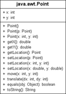

3.3 Die UML (Unified Modeling Language) *
Für die Darstellung einer Klasse lässt sich Programmcode verwenden, also eine Textform, oder aber eine grafische Notation. Eine dieser grafischen Beschreibungsformen ist die UML. Grafische Abbildungen sind für Menschen deutlich besser zu verstehen und erhöhen die Übersicht.
Im ersten Abschnitt eines UML-Diagramms lassen sich die Attribute ablesen, im zweiten die Operationen. Das + vor den Eigenschaften zeigt an, dass sie öffentlich sind und jeder sie nutzen kann. Die Typenangabe ist gegenüber Java umgekehrt: Zuerst kommt der Name der Variable, dann der Typ beziehungsweise bei Methoden der Typ des Rückgabewerts.
Abbildung 3.1: Die Klasse java.awt.Point in der UML-Darstellung
3.3.1 Hintergrund und Geschichte der UML
Die UML ist mehr als eine Notation zur Darstellung von Klassen. Mit ihrer Hilfe lassen sich Analyse und Design im Softwareentwicklungsprozess beschreiben. Mittlerweile hat sich die UML jedoch zu einer allgemeinen Notation für andere Beschreibungen entwickelt, zum Beispiel für Datenbanken oder Workflow-Anwendungen.
Vor der UML waren andere Darstellungsvarianten wie OMT oder Booch verbreitet. Diese waren eng mit einer Methode verbunden, die einen Entwicklungsprozess und ein Vorgehensmodell beschrieb. Methoden versuchen, eine Vorgehensweise beim Entwurf von Systemen zu beschreiben, etwa »erst Vererbung einsetzen und dann die Attribute finden« oder »erst die Attribute finden und dann mit Vererbung verfeinern«. Bekannte OO-Methoden sind etwa Shlaer/Mellor, Coad/Yourdon, Booch, OMT und OOSE/Objectory. Aus dem Wunsch heraus, OO-Methoden zusammenzufassen, entstand die UML – anfangs stand die Abkürzung noch für Unified Method. Die Urversion 0.8 wurde im Jahre 1995 veröffentlicht. Die Initiatoren waren Jim Rumbaugh und Grady Booch. Später kam Ivar Jacobson dazu, und die drei »Amigos« erweiterten die UML, die in der Version 1.0 bei der Object Management Group (OMG) als Standardisierungsvorschlag eingereicht wurde. Die Amigos nannten die UML nun Unified Modeling Language, was deutlich macht, dass die UML keine Methode ist, sondern lediglich eine Modellierungssprache. Die Spezifikation erweitert sich ständig mit dem Aufkommen neuer Software-Techniken, und so bildet die UML 2.0 Konzepte wie Model-Driven Architecture (MDA) und Geschäftsprozessmodellierung (BPM) ab und unterstützt Echtzeitmodellierung (RT) durch spezielle Diagrammtypen.
Eine aktuelle Version des Standards lässt sich unter http://tutego.de/go/uml einsehen.
3.3.2 Wichtige Diagrammtypen der UML
UML definiert diverse Diagrammtypen, die unterschiedliche Sichten auf die Software beschreiben können. Für die einzelnen Phasen im Softwareentwurf sind jeweils andere Diagramme wichtig. Wir wollen kurz vier Diagramme und ihr Einsatzgebiet besprechen:
Anwendungsfalldiagramm
Ein Anwendungsfalldiagramm (Use-Cases-Diagramm) entsteht meist während der Anforderungsphase und beschreibt die Geschäftsprozesse, indem es die Interaktion von Personen – oder von bereits existierenden Programmen – mit dem System darstellt. Die handelnden Personen oder aktiven Systeme werden Aktoren genannt und sind im Diagramm als kleine (geschlechtslose) Männchen angedeutet. Anwendungsfälle (Use Cases) beschreiben dann eine Interaktion mit dem System.
Klassendiagramm
Für die statische Ansicht eines Programmentwurfs ist das Klassendiagramm einer der wichtigsten Diagrammtypen. Ein Klassendiagramm stellt zum einen die Elemente der Klasse dar, also die Attribute und Operationen, und zum anderen die Beziehungen der Klassen untereinander. Klassendiagramme werden in diesem Buch häufiger eingesetzt, um insbesondere die Assoziation und Vererbung zu anderen Klassen zu zeigen. Klassen werden in einem solchen Diagramm als Rechteck dargestellt, und die Beziehungen zwischen den Klassen werden durch Linien angedeutet.
Objektdiagramm
Ein Klassendiagramm und ein Objektdiagramm sind sich auf den ersten Blick sehr ähnlich. Der wesentliche Unterschied besteht aber darin, dass ein Objektdiagramm die Belegung der Attribute, also den Objektzustand, visualisiert. Dazu werden sogenannte Ausprägungsspezifikationen verwendet. Mit eingeschlossen sind die Beziehungen, die das Objekt zur Laufzeit mit anderen Objekten hält. Beschreibt zum Beispiel ein Klassendiagramm eine Person, so ist es nur ein Rechteck im Diagramm. Hat diese Person zur Laufzeit Freunde (es gibt also Assoziationen zu anderen Personen-Objekten), so können sehr viele Personen in einem Objektdiagramm verbunden sein, während ein Klassendiagramm diese Ausprägung nicht darstellen kann.
Sequenzdiagramm
Das Sequenzdiagramm stellt das dynamische Verhalten von Objekten dar. So zeigt es an, in welcher Reihenfolge Operationen aufgerufen und wann neue Objekte erzeugt werden. Die einzelnen Objekte bekommen eine vertikale Lebenslinie, und horizontale Linien zwischen den Lebenslinien der Objekte beschreiben die Operationen oder Objekterzeugungen. Das Diagramm liest sich somit von oben nach unten.
Da das Klassendiagramm und das Objektdiagramm eher die Struktur einer Software beschreiben, heißen die Modelle auch Strukturdiagramme (neben Paketdiagramm, Komponentendiagramm, Kompositionsstrukturdiagramm und Verteilungsdiagramm). Ein Anwendungsfalldiagramm und ein Sequenzdiagramm zeigen daher eher das dynamische Verhalten und werden Verhaltensdiagramme genannt. Weitere Verhaltensdiagramme sind das Zustandsdiagramm, das Aktivitätsdiagramm, das Interaktionsübersichtsdiagramm, das Kommunikationsdiagramm und das Zeitverlaufsdiagramm. In der UML ist es aber wichtig, die zentralen Aussagen des Systems in einem Diagramm festzuhalten, sodass sich problemlos Diagrammtypen mischen lassen.
3.3.3 UML-Werkzeuge
In der Softwareentwicklung gibt es nicht nur den Java-Compiler und die Laufzeitumgebung, sondern viele weitere Tools. Eine Kategorie von Produkten bilden Modellierungswerkzeuge, die bei der Abbildung einer Realwelt auf die Softwarewelt helfen. Insbesondere geht es um Software, die alle Phasen im Entwicklungsprozess abbildet.
UML-Werkzeuge formen eine wichtige Gruppe, und ihr zentrales Element ist ein grafisches Werkzeug. Mit ihm lassen sich die UML-Diagramme zeichnen und verändern. Im nächsten Schritt kann ein gutes UML-Tool aus diesen Zeichnungen Java-Code erzeugen. Noch weiter als eine einfache Codeerzeugung gehen Werkzeuge, die aus Java-Code umgekehrt UML-Diagramme generieren. Diese Reverse-Engineering-Tools haben jedoch eine schwere Aufgabe, da Java-Quellcode semantisch so reichhaltig ist, dass entweder das UML-Diagramm »zu voll« ist, völlig unzureichend formatiert ist oder Dinge nicht kompakt abgebildet werden. Die Königsdisziplin der UML-Tools bildet das Roundtrip-Engineering. Im Optimalfall sind dann das UML-Diagramm und der Quellcode synchron, und jede Änderung der einen Seite spiegelt sich sofort in einer Änderung auf der anderen Seite wider.
UML-Produkte
Global gesehen, ist die Anzahl der UML-Tools groß, doch schmilzt die Zahl der Werkzeuge, die in Eclipse eingebunden werden können, rasch zusammen. Noch kleiner ist die Zahl freier UML-Tools. Hier sind einige Empfehlungen:
- eUML2 (http://www.soyatec.com/) und OMONDO (http://www.omondo.de/): Dies sind Eclipse-basierte UML-Tools. Es gibt freie, eingeschränkte Varianten. Einige Entwickler von OMONDO haben sich abgespalten, und daraus ist eUML2 entstanden.
- ArgoUML (http://argouml.tigris.org/) ist ein freies UML-Werkzeug mit UML 1.4-Notation.
- Apollo for Eclipse und Poseidon for UML (basiert auf NetBeans) stammen von der deutschen Gentleware AG (http://www.gentleware.com/) in Hamburg. Die Firma wirbt mit folgender Aussage: »Poseidon for UML is the world’s most downloaded commercial UML tool, with over 1,200,000 copies distributed to over 100 countries.«[92](Der Spruch steht schon ein bisschen länger auf der Webseite.)
- Together (http://www.borland.com/de/products/together/) ist ein alter Hase unter den UML-Tools. Ursprünglich von Togethersoft als eigenständige UML-Software entwickelt, ist es dann in die Hände Borlands gekommen und in die JBuilder-IDE gewandert. Die aktuelle Version Borland Together basiert auf Eclipse.
- Rational Rose (http://www-01.ibm.com/software/de/rational/design.html): Das professionelle UML-Werkzeug von IBM zeichnet sich durch seinen Preis aus, aber auch durch die Integration einer ganzen Reihe weiterer Werkzeuge, etwa für Anforderungsdokumente, Tests usw.
- NetBeans 6 (http://www.netbeans.org/features/uml/). NetBeans brachte viele Jahre ein schönes UML-Tool mit. Wie die NetBeans-IDE auch, war es frei. Leider wurde die Weiterentwicklung auf Eis gelegt, und es ist nur für ältere NetBeans-Versionen lauffähig. Die Entwickler sagen, dass die Code-Qualität so schlecht war, dass eine Weiterentwicklung für NetBeans 7 nicht mehr sinnvoll war; vielmehr wollte man eine Neuimplementierung beginnen.
Ihr Kommentar
Wie hat Ihnen das <openbook> gefallen? Wir freuen uns immer über Ihre freundlichen und kritischen Rückmeldungen.
 Jetzt bestellen
Jetzt bestellen


{kind=link}